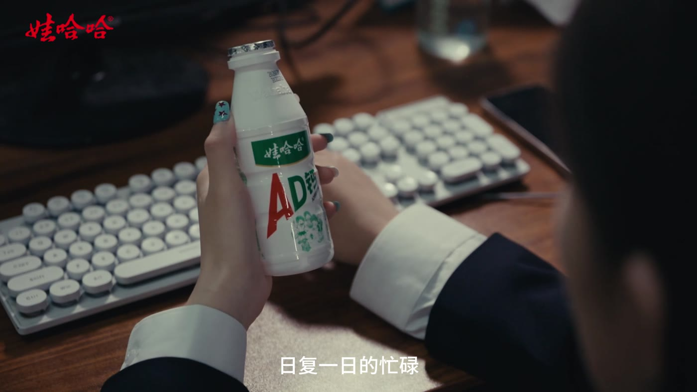
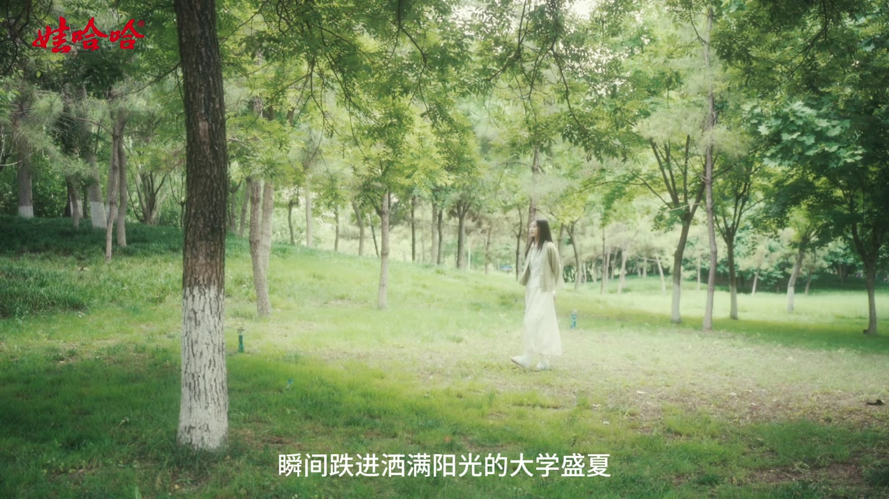
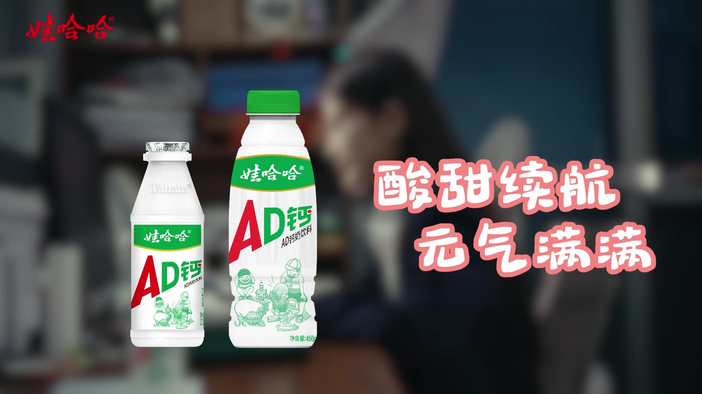

品牌广告 / 影视创作 FEATURED FILM
WAHAHA · BRAND FILM
酸甜续航
用一口酸甜，连接青春与当下。
为娃哈哈品牌创作的广告作品。以深夜加班与大学回忆的交错叙事，让一瓶熟悉的饮品成为情感的纽带，唤醒疲惫生活里的元气与热爱。
第 18 届大广赛 · 河南赛区三等奖 ↗下载导演创意阐述 ↓阅读创意说明
“陪你酸酸甜甜，陪你可可爱爱。”
以陪伴为主题，让产品承载从大学到职场的青春记忆。

01 / 现实深夜加班的疲惫
以冷色调、固定镜头和近景特写呈现职场的紧绷感。键盘与时钟声建立环境，让观众进入女孩的情绪。

02 / 回忆被唤醒的青春时光
拿起饮品的动作串联两个时空。阳光、柔焦与晃动的镜头，配合鸟鸣、风声和轻快吉他，呈现大学生活的松弛与鲜活。

03 / 回归重新出发的元气
回到现实，插入吸管的声音被放大，音乐转为舒缓而有力量的节奏。产品成为情绪转折的线索，延续“陪伴”的主题。
创意价值
从年轻人的真实疲惫出发，以青春回忆建立情感共鸣。通过“现实—回忆—现实”的情绪变化，让产品自然地参与故事，将品牌的陪伴感转化为具体的生活体验。